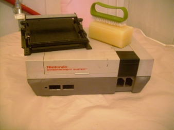
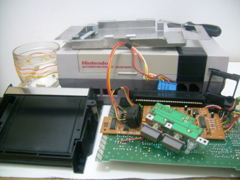
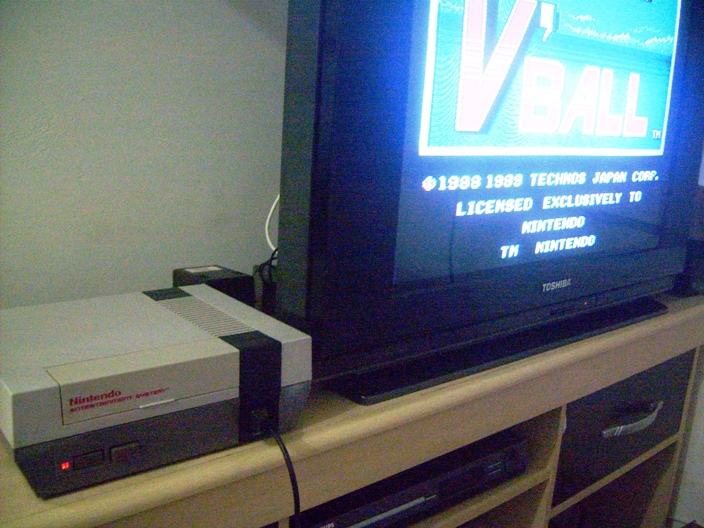

NES - Como restaurar um console
 :::. Por Gigacom - Vindo
direto de uma tipica feirinha do Rolo, eis que me aparece esse NES todo
quimbado, sujo, cacarento e com cheiro de cachorro novo. Não
pensei duas vezes, peguei o coitado e me preparei para uma bela limpeza
tirando fotos de todo o processo para mostrar algumas dicas sobre como
restaurar um dos nossos queridos e amados Nintendinhos. Acompanhe!
:::. Por Gigacom - Vindo
direto de uma tipica feirinha do Rolo, eis que me aparece esse NES todo
quimbado, sujo, cacarento e com cheiro de cachorro novo. Não
pensei duas vezes, peguei o coitado e me preparei para uma bela limpeza
tirando fotos de todo o processo para mostrar algumas dicas sobre como
restaurar um dos nossos queridos e amados Nintendinhos. Acompanhe!
_________________________________________________________________________________
Eis que volta o Nes arrependido, com suas orelhas tão fartas, com seu osso roído e com o rabo entre as patas... tá tá, não vou repetir isso umas 40 vezes como naquele episódio do Chaves, mas fato é que esse NES chegou a mim em um estado deplorável. Quando o comprei, sabia muito bem que o aparelho deveria estar funcionando perfeitamente, e que foi parar numa feira do rolo por um motivo qualquer. O comprei em um pacotão no Mercado Livre, onde veio tambem um Mega Drive em igual estado. Eis a cara do sujeito:
Chegando aqui, constatei que se trata de um NES da Playtronic, adaptado ao sistema de televisão brasileiro (PAL-M). Devido ao estado do console, preferi não ligá-lo de imediato, até porque o conector da fonte estava com sinais de que havia sido estragado, então, pra evitar que houvesse um curto ou algo do tipo, primeiro o desmontei para verificar como ele estava por dentro:
A parte da fonte de fato havia sido danificada por algum dos ultimos donos dele, o console tambem estava mal encaixado e sem a chava metálica superior que cobre a entrada do cartucho. Essa parte metálica na verdade, não faz falta alguma, ela tando lá ou não, dá na mesma. Porém, há uma peculiaridade nesse NES da Playtronic, que é uma placa adicional (a da foto da direita) que serve para transcodificar a imagem do console de NTSC para o PAL-M usado nas televisões brasileiras. Há vários fios soldados em diversos pontos da placa mãe do NES e que compõem o cabo que é ligado nessa placa. Na foto não dá pra perceber muito bem, mas a situação da plaquinha estava lastimavel... muita poeira em todo canto.
A placa mãe do console estava incrivelmente bem, sem sujeira, restos de barata ou qualquer coisa do tipo. Esse console tambem não foi destravado, o que o faz funcionar somente com jogos originais. Há um adesivo nela dizendo "NTSC", isso porque esse console foi importado pela Playtronic, tendo um ou outro componente do pacote que formava o console fabricado por aqui, como a caixa e os manuais hehehe, o resto vinha do Japão mesmo. Notem abaixo como estão soldados os fios que são conectados na plaquinha que converte o sinal de video.

Bem, com o console já aberto e parcialmente, ainda faltava retirar as peças que compõem o painel do console. Essas peças estão parafusadas e encaixadas de modo peculiar, pois as portas do controle e os botões Power e Reset estão conectados na placa mãe através de plugs e não soldados como ocorre geralmente em outros consoles. Para retirar as portas de entrada dos controles, é preciso desparafusar aquele espelho preto que fica na frente deles. Os parafusos ficam na parte de baixo da carcaça, por fora, conforme mostra as fotos abaixo:
Após
desparafusar, as portas ficam soltas e é possivel
removê-las puxando-as para frete após desconectar
da placa mãe (obviamente, senão tu arrebenta com tudo ).
Os botões Power, Reset e o led que indica quando o console
tá ligado, ficam em uma placa só separadas da placa
mãe como comentei antes. Há fois parafusos que a prendem
na parte de baixo da carcaça.
).
Os botões Power, Reset e o led que indica quando o console
tá ligado, ficam em uma placa só separadas da placa
mãe como comentei antes. Há fois parafusos que a prendem
na parte de baixo da carcaça.
Se for desmontar o NES, lembre-se de desconectar e desparafusar absolutamente tudo! Na foto à esquerda, plaquinha dos botões e led do painel, à direita, os conectores das portas dos controles e da plaquinha do painel.
A bandeija onde se encaixa os cartuchos é removivel mas normalmente fica presa ao console por parafusos e fica encaixada entre o slot e a placa mãe. Após remover os parafusos, só é preciso dar uma puxadinha pra frente para remover a bandeija. Nesse caso, a mesma estava mais empoeirada que lagartixa no sertão em plena seca.
Essa
peça pode ser lavada sem problemas, precisando apenas que seja
seca de imediato logo após a lavagem, para que não haja
oxidação das molas laterais. Bem,com tudo separado, dei
uma ultima olhada na sujeira que estava prestes a ser eliminada  :
:
Daqui pra frente, o processo de limpeza foi o mesmo adotado na limpeza de diversos outros consoles. Basicamente, é preciso usar sabão, água, escova de dentes, pincel, alcool, água, esponja, água, sabão, mais água, e pra garantir, mais sabão e água. Primeiro, limpeza de partes plásticas, e lá fui eu limpar a carcaça do Nintendinho.

Um antes e depois. A foto da esquerda mostra o Nintendinho prestes a tomar o maior banho da vida dele, a da direita o resultado. A diferença é gritante! E o melhor de tudo, depois dessa o cheiro de cachorrinho novo foi embora.
Nota: não tomo cerveja, essa caixa da Heineken só tá aí pra forrar mesmo.
Nota 2: não tomo cerveja pois só de sentir o
cheiro de uma, começo a ter ânsia de vômito .
.
As
peças com circuito eletrônicos obviamente, não
podem ser mergulhadas num tanque com água e sabão (apesar
de eu já ter feito isso com um Master System, e o mesmo
continuou vivo e pedindo por outra mergulhada ).
Para limpar, o jeito é usar um pincel e varrer toda a poeira da
placa, e só depois disso
é que se usa um pouco de alcool pra tirar manchas ou meleca de
bicho morto (se você usar alcool logo de cara, vai formar a maior
lama...). Em locais onde não há capacitores ou que
tiver uma sujeirinha mais persistente, pode-se usar uma escova de
dentes mesmo. Ah! É nessa hora que se limpa tambem o conector do
cartucho, uma boa limpada ali vai ajudar a evitar qualquer falha na
hora de colocar um game qualquer, precisando é claro, tomar
cuidado apenas para não entortar os pinos ali dentro com as
cerdas da escova ou do pincel, portanto, tenha paciência e
faça esse processo com calma. Nessa hora tambem,
aproveitei para dar uma boa limpada nas portas de entrada dos
controles, e naquela plaquinha dos botões Power e Reset. Abaixo,
o resultado parcial da limpeza.
).
Para limpar, o jeito é usar um pincel e varrer toda a poeira da
placa, e só depois disso
é que se usa um pouco de alcool pra tirar manchas ou meleca de
bicho morto (se você usar alcool logo de cara, vai formar a maior
lama...). Em locais onde não há capacitores ou que
tiver uma sujeirinha mais persistente, pode-se usar uma escova de
dentes mesmo. Ah! É nessa hora que se limpa tambem o conector do
cartucho, uma boa limpada ali vai ajudar a evitar qualquer falha na
hora de colocar um game qualquer, precisando é claro, tomar
cuidado apenas para não entortar os pinos ali dentro com as
cerdas da escova ou do pincel, portanto, tenha paciência e
faça esse processo com calma. Nessa hora tambem,
aproveitei para dar uma boa limpada nas portas de entrada dos
controles, e naquela plaquinha dos botões Power e Reset. Abaixo,
o resultado parcial da limpeza.
Tudo limpo e seco, hora de juntar toda a tralha para a montagem do video game. Espectativa em alta, a ansiedade começa a roer os nervos.

Algumas vezes,
não dá pra trazer uma cara completamente nova ao console,
pois algumas partes do plástico podem estar arranhadas ou
amareladas. Esse NES por exemplo, melhorou imensamente depois do banho,
porém algumas cicatrizes vão acompanhá-lo pelo
resto dos dias... a tampinha do cartucho está um pouquinho
amarelada, e a parte de baixo, bem perto das laterais, está
arranhada e com esbranquiçado. Mesmo assim, tá bem mais
bonito do que antes .
.
Bem,
hora de fechar o console com os parafusos. Pego um
cartuchinho americano (pois por conta da trava, obviamente os meus
cartuchos de Phantom System não irão pegar nele ),
dou uma olhada na entrada da fonte do video game... como havia dito
antes, essa parte foi bem danificada por alguem, mas deu pra ver que
não havia estrago suficiente para impedir que o console ligasse.
O conector está parcialmente quebrado, há como consertar
isso, mas deixei como estava, pluguei a fonte e... voalá!
),
dou uma olhada na entrada da fonte do video game... como havia dito
antes, essa parte foi bem danificada por alguem, mas deu pra ver que
não havia estrago suficiente para impedir que o console ligasse.
O conector está parcialmente quebrado, há como consertar
isso, mas deixei como estava, pluguei a fonte e... voalá!



 Mais um NES de volta a vida!!! Final feliz amiguinhos!!!
Mais um NES de volta a vida!!! Final feliz amiguinhos!!!


Acesse o Trombone e comente sobre essa matéria!


Aqui, vou apresentar a restauração de um controle de SNES que comprei em péssimo estado numa feirinha da minha cidade, e que agora está lindinho funcionando perfeitamente. Confira as dicas, e faça uma restauração você também
Restaurando um controle de PSX
Peguei o mais feinho e judiado dos controles para fazer esse artigo. O coitado estava encardido na parte de cima, e debaixo dele encontrei arranhões nas partes de apoio da mão, e bastante sujeira acumulada nas inscrições. O conector do cabo estava muito arranhado e sujo tambem, o cabo então nem se fala... sujava a mão só de pegar